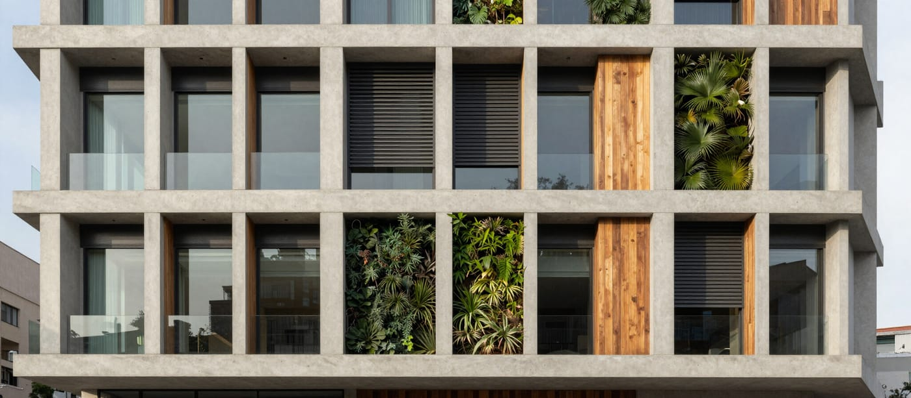

Certificación Edificio Sustentable (CES)
Acompañamos a mandantes y equipos de diseño en todo el proceso de certificación CES, desde la precertificación hasta la obtención del certificado.

El estándar nacional de sustentabilidad
CES es el sistema nacional de certificación para edificios de uso público, desarrollado por el Instituto de la Construcción. Evalúa energía, agua, confort ambiental, materiales y gestión. Es el estándar de referencia para la infraestructura pública en Chile y su adopción se extiende cada vez más al sector privado.
¿Qué hacemos?
Asesoría de precertificación
Acompañamos al equipo de diseño desde las primeras etapas, definiendo estrategias para alcanzar los créditos y prerequisitos CES con el diseño más eficiente posible.
Gestión del proceso de certificación
Coordinamos toda la documentación, cálculos y evidencia requerida, y gestionamos el proceso ante el organismo certificador hasta la obtención del certificado.
Evaluación de edificios existentes
CES también certifica edificios en operación. Evaluamos el desempeño actual y definimos una ruta de mejora para alcanzar la certificación.
A quién está dirigido
Mandantes públicos y privados, oficinas de arquitectura e ingeniería, constructoras que desarrollan edificios de uso público (educación, salud, oficinas, cultura, aeropuertos).
- Mandantes públicos y privados
- Oficinas de arquitectura e ingeniería
- Constructoras de edificios de uso público
- Educación, salud, oficinas, cultura y aeropuertos
Dudas habituales sobre la certificación CES
Es el sistema nacional que evalúa y certifica el desempeño ambiental de edificios de uso público en Chile, considerando aspectos como calidad del ambiente interior, energía, agua y residuos.
Es voluntaria, pero cada vez más valorada y exigida por mandantes públicos en sus proyectos. Contar con ella respalda el desempeño del edificio y lo diferencia ante el mandante.
Tres niveles según el puntaje alcanzado: Certificado, Destacado y Sobresaliente. Desde la precertificación definimos a qué nivel conviene aspirar según las características del proyecto.